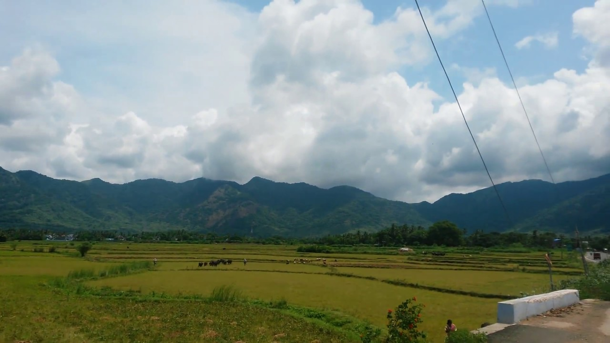
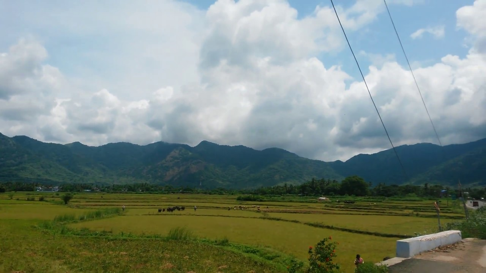

Tenkasi
Town in Tamilnadu
register
Click
Location of Tenkasi:
 

Tenkasi
Tenkasi is a town and headquarters of the Tenkasi district in Indian state of Tamil Nadu.
Tenkasi District was formed as the 33rd District of Tamil Nadu.
- Area: 65 km²
- Elevation: 143 m
- District: Tenkasi
- Weather: 28 °C, Wind SW at 5 km/h
- Region: Tirunelveli
- Neighborhoods: Sakthi Nagar, Tenkasi Housing Board, tenkasi vaikalpaalam, Mathina Nagar